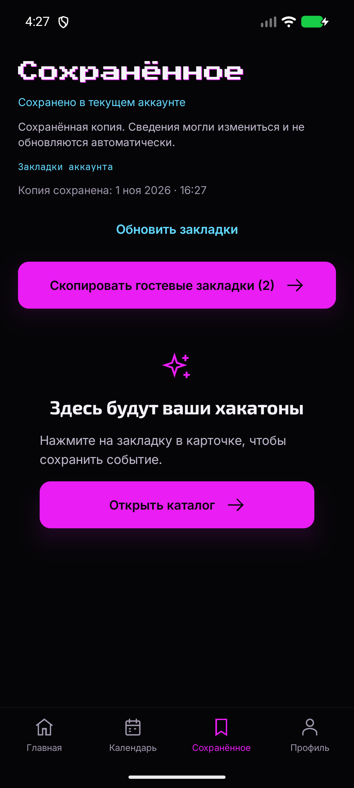
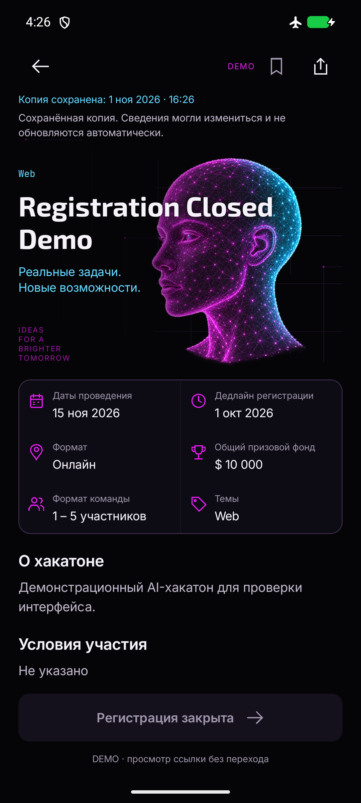
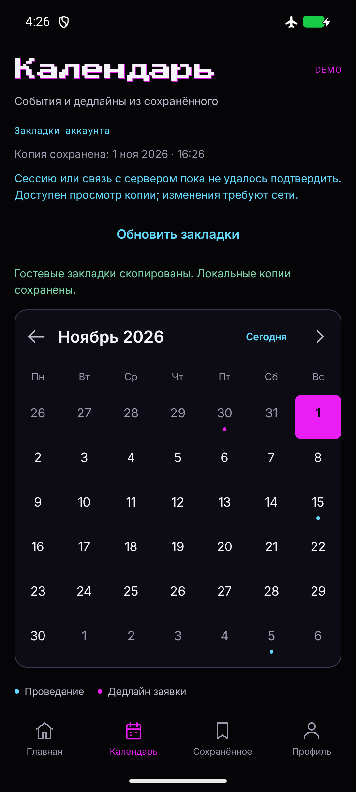
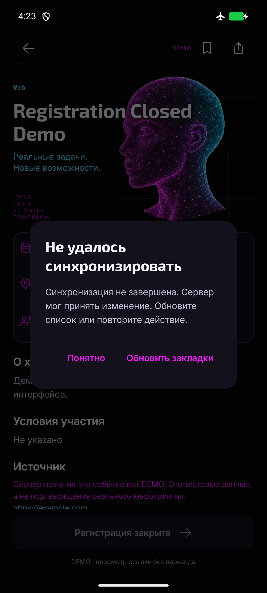
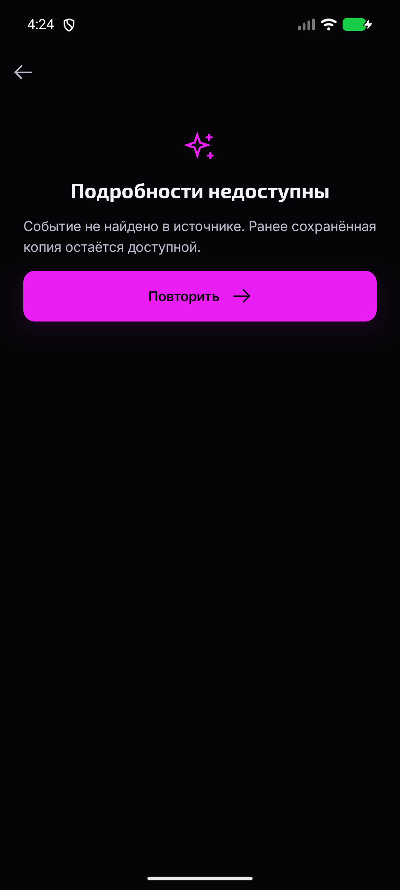
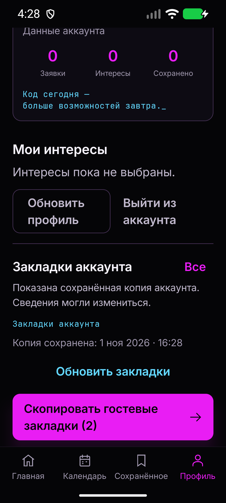

HACKATLAS / M3 ACCOUNT SAVED_Закладки аккаунта и подтверждённое копирование
Реальные Android screenshots Compose UI. Изменения подтверждаются сервером, без сети доступна копия аккаунта. Гостевые сохранения остаются на устройстве. Снимки используют одноразовые тестовые аккаунты в настоящем локальном B2 и явно обозначенные DEMO-события.
Проверки · live B2 smoke · регрессии review · ревью и ограничения. iOS требует Mac/Xcode/native-приёмки; Android не подтверждает Foundation/Keychain.
Изоляция, подробности и календарь

Второй аккаунт без чужих данных

Подробности без сети

Календарь аккаунта без сети
Исправления review и крупный текст

Ошибка видна на текущем экране

Старый CTA скрыт после архивирования

360dp · текст130%